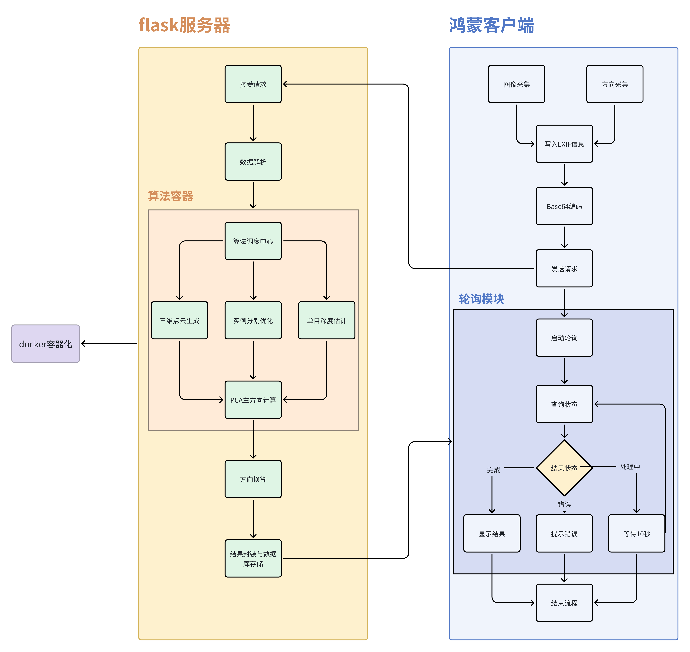

系统整体架构
一.系统设计思路
系统采用客户端-服务端架构进行功能验证：
- 客户端（鸿蒙系统）：实现图像采集、方向传感器数据获取、结果轮询等功能
- 服务端（Flask框架）：负责接收图像数据并执行核心算法处理
- 算法模块：
- 通过单目深度估计与实例分割技术构建车辆三维点云
- 改进原vLLM方法存在的时延高、稳定性不足问题
- 结合终端方向传感器数据，应用PCA主成分分析计算车辆实际朝向
核心技术创新点：
双流特征提取网络：并行处理RGB图像与深度图，通过跨模态注意力机制增强特征表达能力
flowchart LR
鸿蒙终端 -- 图像/IMU数据 --> Flask服务端
Flask服务端 -- 点云生成 --> 改进vLLM方式
传感器融合模块 --> PCA主成分分析 --> 方向校正
方向校正 --> Flask服务端
二.完整系统框架示意图
